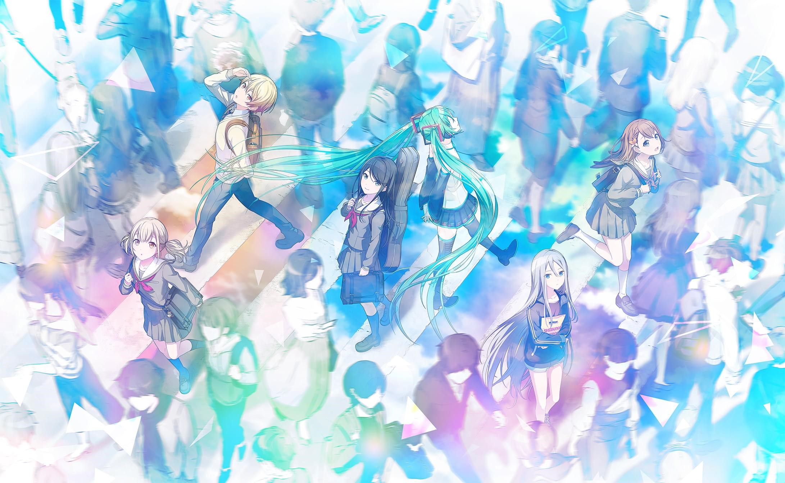

Welcome to Project SEKAI! Colorful Stage Character Wiki!
"A mysterious song named “Untitled” with no melody or lyrics is passed around amongst the youth in Shibuya, Tokyo. This song unlocks access to “SEKAI”, a mysterious place that allows everyone to discover their true emotions and their own song."
This is the Project SEKAI! Colorful Stage Character Wiki. This wiki is dedicated to Project SEKAI! Colorful Stage's characters and units. We compile information on the characters from their in-game profiles, stories, events, and dialogues.
Project SEKAI! Colorful Stage ft. Hatsune Miku or HATSUNE MIKU: Colorful Stage is a mobile gacha rhythm game developed by SEGA, Colorful Palette by Craft Egg, and Crypton Future Media. It was released in September 30, 2020 in Japan for iOS and Android.
UNITS
These links (except "Leo/Need" or leoneed.html, and "MORE MORE JUMP!" or moremorejump.html) aren't currently working and are works in progress! We apologize for the inconvenience.
VIRTUAL SINGER
Leo/need
MORE MORE JUMP!
VIVID BAD SQUAD
WonderlandsxShowtime

25-ji, Nightcord de.
NAVIGATION
© Colorful Palette/ © SEGA / © Crypton Future Media. All rights reserved
References:
HATSUNE MIKU: COLORFUL STAGE. (n.d.). https://www.colorfulstage.com
SEGA, Project SEKAI Colorful Stage!feat. Hatsune Miku(version 2.3.2). https://play.google.com/store/apps/details?id=com.sega.pjsekai&hl=en&gl=US
Project SEKAI 390,000 Preregistrations Official Art. (2020, August 13). Twitter. https://twitter.com/pj_sekai/status/1293820688680120321
Leo/need SEKAI ALBUM vol.1. (n.d.). CDJapan. https://st.cdjapan.co.jp/pictures/l/13/30/BRMM-10498.jpg?v=1
MORE MORE JUMP! SEKAI ALBUM vol.1. (n.d.). CDJapan. https://st.cdjapan.co.jp/pictures/l/13/30/BRMM-10498.jpg?v=1
Vivid BAD SQUAD vol.1. (n.d.). CDJapan. https://st.cdjapan.co.jp/pictures/l/13/30/BRMM-10498.jpg?v=1
WonderlandsxShowtime SEKAI ALBUM vol.1. (n.d.). CDJapan. https://st.cdjapan.co.jp/pictures/l/13/30/BRMM-10498.jpg?v=1
25-ji, Night Code de. SEKAI ALBUM vol.1. (n.d.). CDJapan. https://st.cdjapan.co.jp/pictures/l/13/28/BRMM-10496.jpg?v=1